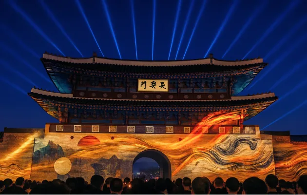
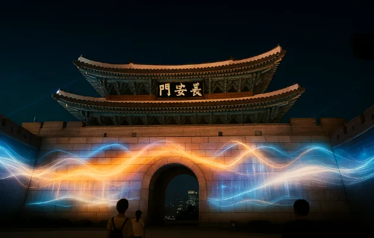
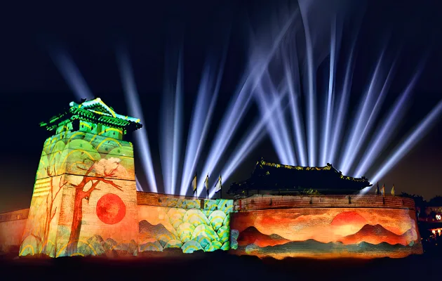
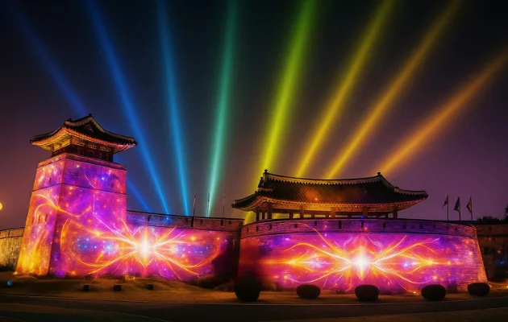
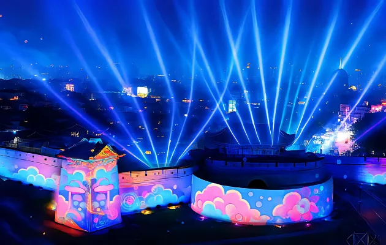
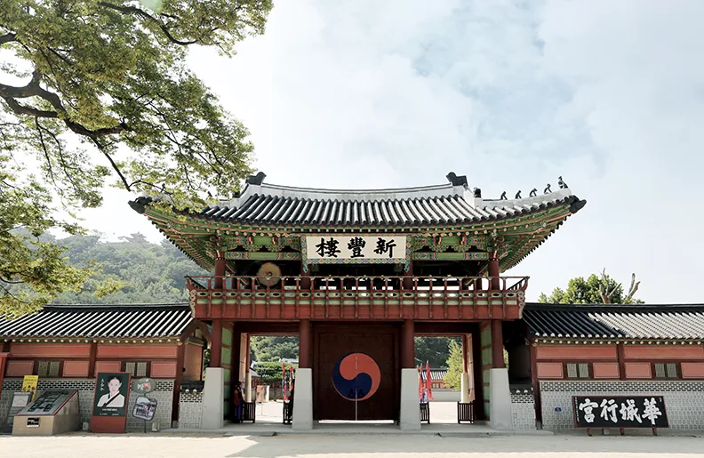
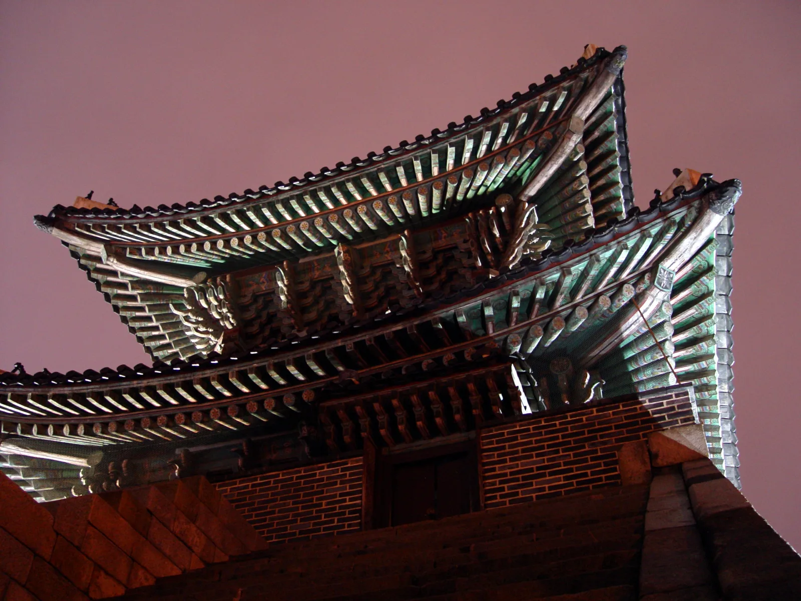
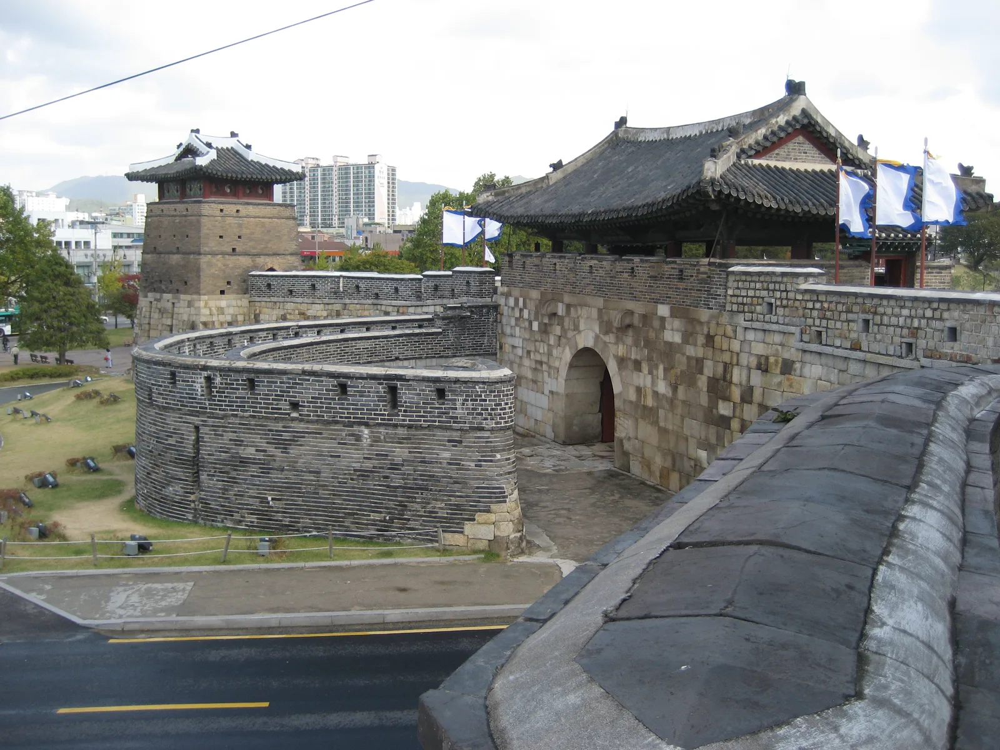

▲ 2026 수원화성 미디어아트 '새빛동락' 장안문 상영 장면. 세계문화유산 성곽 전체가 스크린이 된다 ⓒ 수원특례시·수원문화재단
경기 수원 팔달구 한복판, 1997년 유네스코 세계문화유산으로 지정된 수원화성이 매년 가을 밤마다 거대한 스크린으로 바뀐다. '2026 수원화성 미디어아트'는 화서문과 장안문 일대 성곽에 빛과 영상을 투사해 220년 넘은 석축 위로 파도, 불꽃, 자개빛 문양이 흐르게 만드는 야간 축제다. 올해로 6회째를 맞아 9월 19일부터 10월 6일까지 매일 저녁 열린다. 정확한 상영 시간과 장소부터 화성행궁 야간개장, 주차, 근교 맛집까지 방문 순서대로 정리했다.
1. 2026 수원화성 미디어아트 — 언제, 어디서, 몇 시에

▲ 장안문 정면에 투사되는 물결 형상 미디어아트. 성문 현판 '長安門' 위로 빛이 흐른다 ⓒ 수원특례시·수원문화재단
행사명은 '새빛동락(同樂): 수원화성(華城), 빛으로 피어나다 시즌1-아유가빈(我有嘉賓)'이다. 수원특례시가 주최하고 수원문화재단이 주관하며, 수원의 팔색을 담은 자개빛과 '공존'의 메시지를 대형 미디어아트로 구현했다는 설명이다. 개막식은 9월 19일 오후 7시에 열렸고, 이후 10월 6일까지 매일 저녁 상영이 이어진다. 입장은 무료이며, 별도로 마련된 특별관람석만 유료 예약제로 운영된다.
| 장소 | 운영 시간 | 상영 회차 | 1회 상영 시간 |
|---|---|---|---|
| 화서문 일원 | 18:00~22:00 | 19:30 / 20:30 / 21:30 | 약 35분 |
| 장안문 일원 | 19:00~22:00 | 수시 상영 | 약 15분 |
화서문 쪽은 하루 세 차례 정해진 시각에 약 35분짜리 본편이 상영되고, 장안문 쪽은 19시부터 22시까지 짧은 영상이 반복 상영되는 구조다. 두 곳을 한 번에 다 보려면 오후 7시쯤 도착해 장안문을 먼저 둘러보고, 화서문 회차 시간에 맞춰 이동하는 동선이 무난하다. 해설이 함께하는 '빛담 화성' 투어(약 90분, 다국어 지원)도 운영되니 시간 여유가 있다면 참고할 만하다.
수원문화재단 공식 홈페이지에서 최신 일정 확인 가능2. 성곽이 스크린이 되는 순간 — 화서문·장안문 연출

▲ 화서문 일대 공심돈과 성곽에 투사된 산수화풍 영상. 하늘로 뻗는 빛줄기 연출이 함께 펼쳐진다 ⓒ 수원특례시·수원문화재단
화서문 상영의 핵심은 성벽 전체를 캔버스로 쓰는 대형 프로젝션 매핑이다. 공심돈과 성곽 곡선을 따라 산수화 문양, 자개빛 무늬가 흐르고, 그 위로 수십 갈래 빛줄기가 밤하늘을 가른다. 메인 작품에는 드론을 활용해 고래가 하늘을 나는 장면도 포함됐다는 게 주최 측 설명이다.

▲ 보라·분홍 톤 꽃무늬 영상과 함께 부채꼴로 뻗는 다채색 빛줄기 연출 ⓒ 수원특례시·수원문화재단

▲ 장안공원 일대에서 내려다본 성곽 전경. 뒤로 수원 시내 야경이 함께 펼쳐진다 ⓒ 수원특례시·수원문화재단
장안문 쪽은 붉은 불꽃과 푸른 물결이 성문 정면을 타고 흐르는 연출이 특징이다. 관람객들이 성문 앞 광장에 자연스럽게 모여 앉거나 서서 감상하는 구조라, 정면 사진을 찍기 좋은 자리는 상영 시작 10~15분 전에는 자리를 잡는 편이 좋다.
3. 왜 수원화성인가 — 정조와 세계유산 등재 배경

▲ 화성행궁의 정문 신풍루. 미디어아트 상영 장소인 화서문·장안문에서 도보로 이동 가능한 거리에 있다 ⓒ Wikimedia Commons
수원화성은 조선 22대 임금 정조가 1794년 축성을 시작해 1796년 완성한 성곽이다. 아버지 사도세자의 묘를 수원으로 옮기고 신도시를 건설하면서, 당쟁 근절과 왕권 강화라는 정치적 구상, 그리고 한양 남쪽을 지키는 국방 요새 기능을 함께 담았다. 실학자 정약용이 축성 계획을 총괄하며 거중기·유형거 같은 신식 기구를 발명해 공사 기간과 비용을 크게 줄인 것으로도 유명하다. 축성 전 과정을 인력 명단, 자재 출처, 예산까지 상세히 기록한 「화성성역의궤」가 남아 있어, 동서양 축성 기술이 결합된 우수성과 기록의 완결성을 인정받아 1997년 유네스코 세계문화유산으로 등재됐다.
국가유산포털에서 수원화성 상세 정보 확인 가능4. 미디어아트만 보고 가긴 아쉽다 — 야간 관람 코스

▲ 야간 조명을 받은 장안문 누각 처마와 단청. 미디어아트 상영 전후로도 성문 자체가 훌륭한 야경 포인트가 된다 ⓒ Wikimedia Commons
미디어아트 상영 시간에 맞춰 화성행궁도 야간개장을 함께 운영한다. 2026년은 5월 1일부터 11월 1일까지 매주 금~일요일과 공휴일에 저녁 개방하며, 운영시간은 18:00~21:30(입장 마감 21:00)이다. 한복을 입고 가면 무료 입장이 가능해, 행궁 관람과 미디어아트를 하루 일정으로 묶는 방문객이 많다. 성곽을 따라 걷는 둘레길 야간산책도 빼놓기 아까운 코스다. 화서문에서 장안문까지는 평지 구간이라 밤에도 무리 없이 걸을 수 있고, 정조가 축성 당시부터 활용한 서북공심돈·서장대 일대 야경도 함께 즐길 수 있다. 왕이 타던 가마와 자동차 모티프를 함께 담은 관광차량 화성어차도 주요 구간을 순환 운행하니, 다리가 힘들다면 대안이 된다.
| 항목 | 내용 |
|---|---|
| 운영 기간 | 5월 1일~11월 1일, 매주 금·토·일·공휴일 |
| 운영 시간 | 18:00~21:30 (입장 마감 21:00) |
| 입장료 | 어른 2,000원 · 청소년·군인 1,500원 · 어린이 1,000원 |
| 무료 대상 | 한복 착용자, 만 6세 이하·65세 이상, 장애인 등 |
5. 자동차로 갈 때 — 주차장과 교통 정보

▲ 성곽 둘레길에서 바라본 공심돈과 성문 일대. 성곽 바로 옆으로 시내 도로가 지나 접근성이 좋다 ⓒ Wikimedia Commons
미디어아트 기간에는 화서문·장안문 인근에 저녁마다 인파가 몰리는 만큼, 주차장 위치를 미리 알아 두는 편이 좋다. 화성행궁 근처에서 가장 많이 이용하는 곳은 화성행궁 주차장과 연무대 주차장인데, 화성행궁 주차장은 대형차량 주차가 불가능해 버스나 캠핑카는 연무대 주차장을 이용해야 한다.
| 주차장 | 위치 | 요금 | 비고 |
|---|---|---|---|
| 화성행궁 주차장 | 팔달구 행궁로 18 | 최초 30분 900원, 이후 10분당 400원 (1일권 14,000원) | 212면, 대형차 불가 |
| 연무대 주차장 | 팔달구 매향동 3-17 | 화성행궁 주차장과 동일 요금 | 122면, 대형차 가능 |
| 화홍문·장안동·연무동·남수동 공영주차장 | 성곽 인근 분산 | 최초 60분 무료, 이후 유료 | 단시간 방문에 유리 |
미디어아트 상영 시간대인 저녁 7~9시는 화서문·장안문 인근 도로가 관람객과 차량으로 함께 붐빌 가능성이 크다. 가능하면 상영 시작보다 1시간 정도 여유 있게 도착해 주차부터 마치고, 근처를 걸으며 저녁 식사나 산책으로 시간을 채우는 편을 추천한다. 대중교통을 이용한다면 수원역에서 시내버스로 화서문·장안문 인근까지 이동할 수 있다.
6. 근교 맛집 — 행리단길과 왕갈비통닭
화성행궁을 둘러싼 행궁동 일대는 이미 행리단길이라는 별명으로 불릴 만큼 카페와 맛집이 밀집한 골목이다. 퓨전 한식과 브런치 메뉴를 내는 가게들이 많아 미디어아트 관람 전후로 저녁 식사를 해결하기 좋다. 수원을 대표하는 별미로는 가마솥에 통째로 담겨 나오는 왕갈비통닭이 꼽힌다. 갈비 양념을 입힌 튀김옷과 야들야들한 속살이 특징으로, 원조로 알려진 남문통닭을 비롯해 행궁동 일대 여러 가게에서 맛볼 수 있다. 미디어아트 상영 시간을 기다리는 동안 저녁 식사를 겸해 들르기 좋은 코스다.
✅ 2026 수원화성 미디어아트, 가기 전 체크리스트
· 행사명 '새빛동락: 수원화성, 빛으로 피어나다', 9월 19일~10월 6일 매일 저녁 무료 상영
· 화서문 19:30·20:30·21:30 회차(약 35분), 장안문 19:00~22:00 수시 상영(약 15분)
· 1997년 유네스코 세계문화유산 등재, 정조가 1794~1796년 축성
· 화성행궁 야간개장 병행 운영(금~일·공휴일 18:00~21:30, 한복 착용 시 무료)
· 성곽 둘레길 야간산책, 화성어차 순환 이용 가능
· 화성행궁 주차장은 대형차 불가, 대형차는 연무대 주차장 이용
· 상영 시작 1시간 전 도착 권장, 인근 화홍문 등 공영주차장은 최초 60분 무료
· 저녁 식사는 행리단길 또는 수원 명물 왕갈비통닭 추천